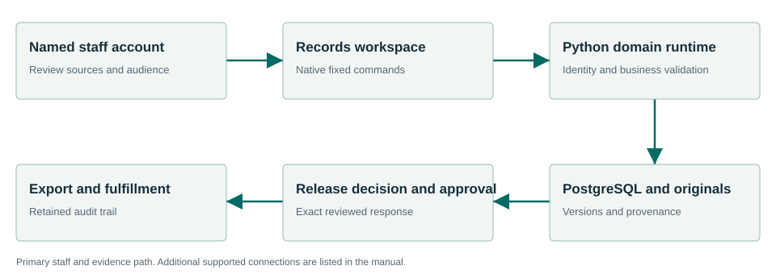

From request intake to a deliberate release.
Records manages request intake, responsive evidence, review and the final response. Material received from another Townlight product is evidence for a request. Records separately controls release decisions, response approval, exports and fulfillment.
What the workflow delivers
- Receive and identify the request. Create the request with its requester, description and recorded deadline basis. Save it and retain the request identifier. Record assignment, clarification and work in the request history.
- Find responsive evidence. Search only the permitted sources. Inspect the source title, date, citation, visibility and version before attaching responsive material. Open the saved attachment to confirm that it is the intended evidence.
- Preserve the original. Keep original bytes and their hash. Add a separately reviewed release-ready or redacted copy when needed. Renaming a private file does not remove private content.
- Record each release decision. Explicitly record release, redact or exempt for the relevant document, with the applicable reason and source. Do not treat an AI suggestion or another product’s review as the Records legal decision.
Connected evidence
Receives selected evidence from Meetings, Code, Zoning, Planning, Permitting, Inspections and Station. Station originals are locked private evidence. A product’s public copy remains subject to the Records response workflow.
Know the beta boundary
The selected staff workflow is accepted. A resident internet deployment, every jurisdiction’s requirements, complete federation and exhaustive redaction/accessibility behavior are not certified by that acceptance. SMTP code exists; logging a message or outbox entry does not establish email delivery.
Where the evidence goes

Receives selected evidence from Meetings, Code, Zoning, Planning, Permitting, Inspections and Station. Station originals are locked private evidence. A product’s public copy remains subject to the Records response workflow.
Selected staff workflows passed.
The signed private candidate passed normal first-run and selected synthetic workflows in a fresh Windows Sandbox profile. This is not a claim that every screen, vendor, upgrade or city equipment configuration has been certified.
Read the exact acceptance and limits →Ready to evaluate?
Begin with the manual and the signed candidate linked above. Configure the chosen test site and have its staff review source applicability and run the existing workflows.